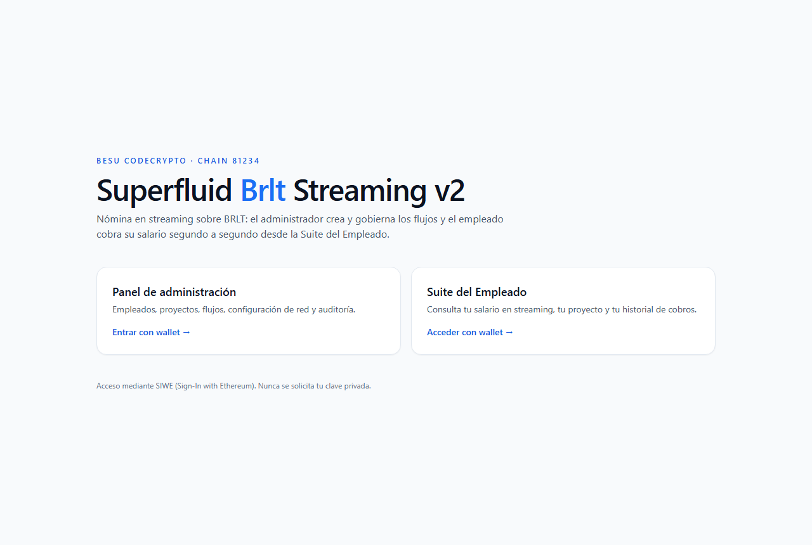
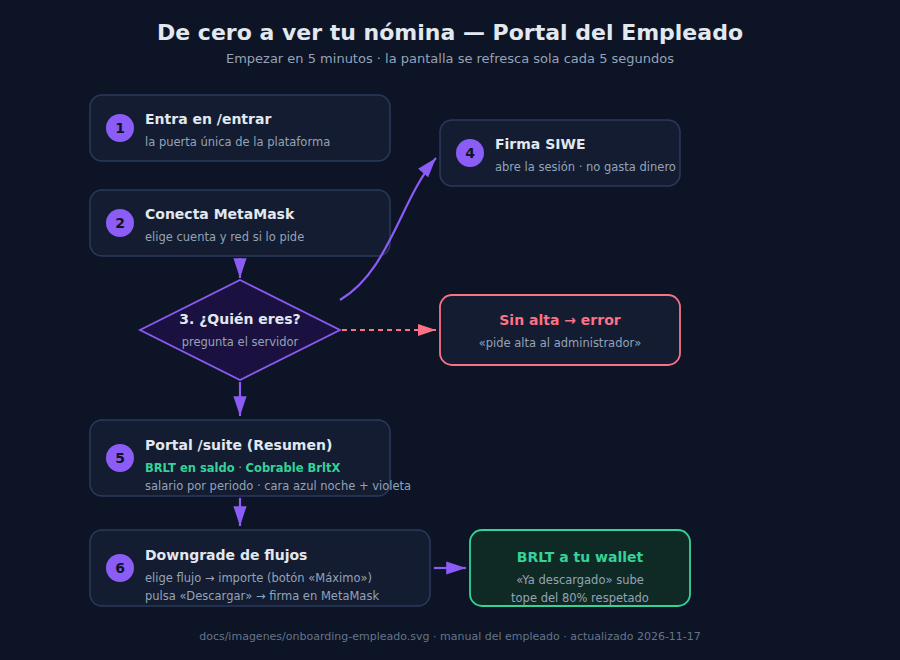
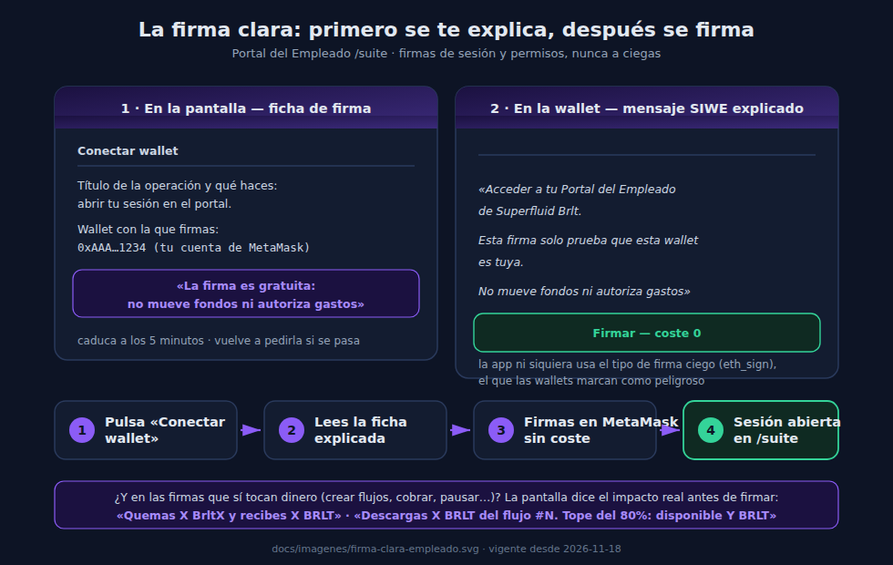
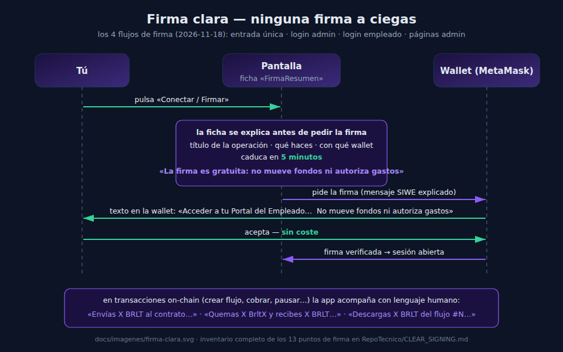

Empezar en 5 minutos
Empleado: entra en /entrar (la puerta única), pulsa
conectar wallet (MetaMask) y firma un mensaje para abrir la sesión
(no gasta dinero). Si tienes ficha de empleado, la app te lleva a tu
Portal del Empleado (/suite). Si no, verás «pide alta
al administrador».
Admin: entra igual por /entrar y acabarás en el panel
/admin. En cualquier entrada verás primero una ficha de
firma explicada: la firma es clara, nunca a ciegas.


/entrar a tu primera descarga en el portal.Novedades (2026-11-18)
- Firma clara en los 13 puntos de firma: mensaje explicado en la wallet y ficha «FirmaResumen» en pantalla — ver detalle.
- Tope del 80% corregido: el contador «ya descargado» compara la wallet sin mayúsculas/minúsculas, así ningún cobro verificado se pierde del recuento — ver detalle.
- Datos reiniciados y simulados: hoy hay 5 empleados activos en 2 proyectos, con los flujos #12, #13 y #15 activos (el #14 terminado) — cómo está la plataforma.
- Batería de pruebas Web3: 41 requisitos EARS, 8 features y 125 escenarios; la primera ejecución terminó con 0 fallos de la app.
- Despliegue vigente: revisión Cloud Run
brltv2-00041-87c(commit83f54e4). No tienes que hacer nada para disfrutar de todo esto.
Empleado: tu Portal del Empleado
Tu portal (/suite) tiene identidad visual propia (fondo azul
noche, tarjetas oscuras y cabecera violeta) y se refresca solo cada
5 segundos. De arriba abajo:
| Sección | Qué encuentras |
|---|---|
| Resumen | BRLT en tu wallet, BrltX cobrable con devengo y tu salario por periodo |
| Downgrade de flujos | El cobro «con nómina»: eliges el flujo y respetas el tope del 80% |
| Cobro autónomo | El cobro libre de siempre: conviertes BrltX de tu cartera sin elegir flujo (también cuenta para el tope) |
| Mis flujos | Tabla de tus «grifos»: estado, acumulado y botón «Descargar» por fila |
| Mi ficha | Tu ficha laboral (proyecto, concepto, importe y periodo) · solo lectura |
| Mi perfil | Datos personales, consentimiento y borrar mis datos |

/suite).Tu sesión está ligada a tu wallet
La app comprueba de forma continua que sigues siendo tú: compara la cuenta activa de MetaMask con la de tu sesión al vuelo (si cambias de cuenta) y además cada 10 segundos.
- Si cambias de cuenta en MetaMask, aparece el aviso
«Wallet distinta a tu sesión» con un botón para revalidar en
/entrar. Hasta que no revalides no podrás seguir operando. - Antes de cualquier firma, la app vuelve a comparar la cuenta conectada con la de tu sesión: si no coinciden, se cancela el envío.
- Si abres
/suitecon una sesión de admin, te manda directamente a/admin. Sin sesión, vuelves a/entrar.

/entrar.Firma clara: qué verás antes de firmar
Desde el 2026-11-18 ninguna firma es a ciegas. Antes de que la wallet te pida firmar, la pantalla muestra una ficha de firma («FirmaResumen») con el título de la operación, qué haces, con qué wallet y la nota por defecto:
«La firma es gratuita: no mueve fondos ni autoriza gastos»
Y en la wallet el mensaje dice para qué es (p. ej. en tu entrada al portal): «Acceder a tu Portal del Empleado de Superfluid Brlt. Esta firma solo prueba que esta wallet es tuya. No mueve fondos ni autoriza gastos». La petición caduca a los 5 minutos: si pasa, vuelve a pedirla y se genera una nueva.

Las firmas que sí tocan dinero
Cuando la operación mueve fondos (crear flujos, cobrar, pausar…), la
pantalla te dice el impacto real antes de firmar: «Quemas X BrltX
y recibes X BRLT», «Descargas X BRLT del flujo #N. Tope del 80%:
disponible Y BRLT». La app ni siquiera usa el tipo de firma ciego
(eth_sign) que las wallets marcan como peligroso; las
transacciones on-chain van acompañadas de lenguaje humano.

Cobro: downgrade de flujos con tope del 80%
Regla de la casa: en total solo puedes convertir en BRLT el 80% de todo lo que te asignaron (la suma de todos tus flujos, vivos o terminados). Lo ya convertido se va restando. Es una regla de la aplicación, no del contrato, y aplica igual al «Cobro autónomo»: los dos comparten el mismo contador.
Las 4 fichas del panel
| Ficha | Significado |
|---|---|
| Asignado a tu cuenta | Todo lo depositado en tus flujos |
| Tope 80% | Lo máximo que podrás convertir en total (80% de lo asignado) |
| Ya descargado | Lo que ya has convertido en BRLT hasta hoy |
| Disponible | Tope − ya descargado. Es tu margen actual |
Ejemplo: asignado 10.000 → tope 8.000 → ya descargado 1.500 → disponible 6.500.
El contador «Ya descargado», corregido (2026-11-18)
Lo que ya has descargado se reconstruye de la auditoría de cobros
verificados contra la cadena. Hasta hoy, los cobros registrados con la
wallet escrita en otro formato (mayúsculas/minúsculas distintas) no
contaban; la comparación ahora ignora mayúsculas/minúsculas, así
que los cuatro números del panel son fiables. Ya está desplegado en la
revisión brltv2-00041-87c: no tienes que hacer nada.
Cómo descargar, paso a paso
1) Elige el flujo en el selector (activos, pausados o terminados) · 2) Escribe el importe o pulsa «Máximo» (te propone lo menor entre tu BrltX en cartera y lo disponible del tope) · 3) Pulsa «Descargar»: MetaMask firma (no gasta nada) y en segundos sube tu BRLT en saldo.
Si superas el tope: verás el aviso
tope_80_superado y no se cobra ni se registra nada. Y si
«Máximo» te da 0, o el tope está agotado o tu BrltX en cartera es 0
(el devengo pendiente solo se convierte en cobrable cuando el flujo se
liquida on-chain).

Admin: crear flujos
1) Sistema guarda RPC y contratos · 2) Proyectos y Empleados · 3) Flujos → Crear flujo con dos firmas (aprobación y creación).


El tope del 80% visto desde el admin
De tu operativa no cambia nada: crear, pausar, reanudar, terminar y liquidar flujos se hace igual que siempre — el tope solo limita el cobro del empleado, no tu gestión. Lo que ves tú:
- Tu empleado puede convertir en BRLT, acumulativamente, el 80% de todo lo asignado a su cuenta (todos sus flujos, vivos o terminados); lo ya cobrado se reconstruye de la auditoría de cobros verificados contra la cadena. La comparación de la wallet del actor es sin mayúsculas/minúsculas desde el 2026-11-18: ningún cobro verificado se pierde del recuento.
- Si un intento supera el tope, el servidor lo rechaza con el código
tope_80_superadoy no lo registra ni lo cobra. - En Auditoría verás los cobros que sí pasaron el tope (quién, cuánto, cuándo y la transacción); los intentos rechazados no dejan huella allí.

La plataforma hoy (tras la simulación del 2026-11-18)
La base se reinició (con respaldo previo y contratos intactos) y se volvió a llenar con uso real simulado. Estado vigente:
| Dato | Valor |
|---|---|
| Empleados activos | 5: Uno, Dos y Tres (100 BRLT/30 d) · Cuatro (mantenimiento, 50/15 d) · Cinco (proyecto_mvp, 80/6 d) |
| Proyectos | 2: Nomina ANLU y Mantenimiento Infraestructura |
| Flujos vivos | #12 (300/30 d) y #13 (600/6 d) de nómina + #15 (360/6 d) de mantenimiento, activos · #14 terminado |
| Programados | 2 en estado «próximo» (los ejecutas cuando toque) |
| Ejemplo auditado | Flujo #13: pausa acredita 0,125 BRLT → cobro del empleado Dos → reanudación, todo dentro del tope 80% |

Estados de un flujo
activo → pausado → activo → vencido → terminado. Al vencer, el flujo queda pendiente de liquidación (puede liquidarlo cualquiera y el remanente vuelve al admin — máx. 100 % del depositado va al empleado en su tramo devengado).
Pausa / reanudación
Al pausar, el tramo devengado se liquida y el tiempo restante se aplaza: el empleado no pierde devengo. Con la pausa activa, el cobro sigue disponible (el contrato lo permite incluso pausado).
Ejemplo real, paso a paso
Del 2026-11-18, el flujo #13 del empleado Dos (600 BRLT a 6 días): pausa → el contrato acredita el tramo devengado (0,125 BRLT) → cobro del empleado, auditado y dentro del tope 80% → reanudación con la tasa intacta y el tiempo restante aplazado, sin perder devengo. El mismo día se pausó/cobró/reanudó el #12 y se terminó el #14 (pagó lo devengado; el resto volvió al admin).

Cambio de wallet
El empleado firma con la wallet nueva y el admin confirma. Los flujos
activos se migran con changeReceiver: el flujo viejo se cierra y se abre
uno nuevo con el saldo restante. Sin pagos duplicados.
Recuerda: tu sesión va ligada a la wallet. Si cambias de cuenta en MetaMask,
verás el aviso «Wallet distinta a tu sesión»: vuelve a entrar con tu
cuenta en /entrar y seguirás donde estabas.

Tus datos (GDPR)
En tu Suite: perfil, consentimiento (con fecha) y borrar mis datos con efecto inmediato. A los 30 días se anonimiza el nombre; tu wallet queda pseudonimizada hasta 90 días para el retiro.
Mantenimiento automático
La app se autoreconcilia cada 5 min: corrige desajustes leyendo el contrato,
guarda el diario de eventos y avisa de nóminas vencidas. Puedes ejecutar
manualmente cualquiera desde /admin/jobs.

Descargar PDF
Manuales imprimibles generados desde la documentación viva del proyecto
(copias descargables en /manual/):